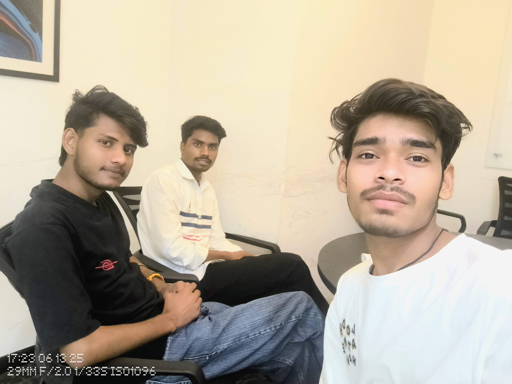
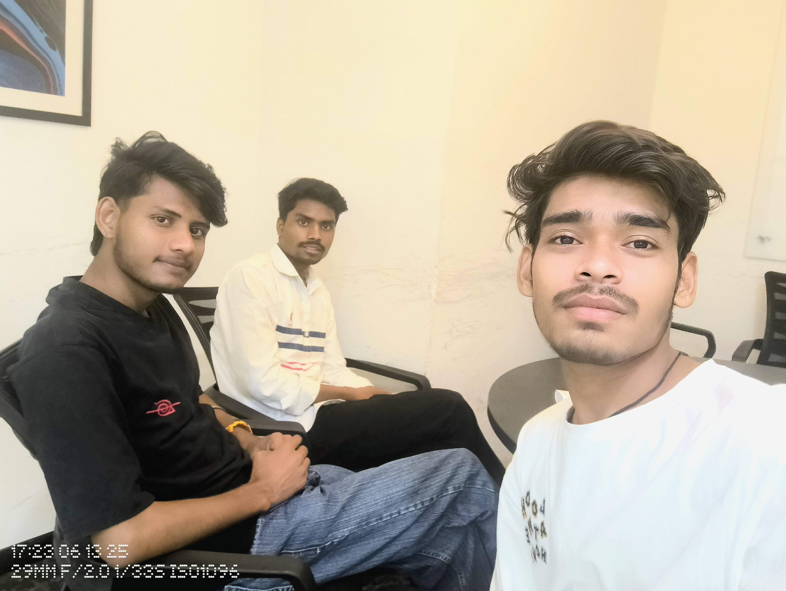

GeeksforGeeks Data Analytics Workshop
About GeeksforGeeks Data Analytics Workshop
The GeeksforGeeks Data Analytics Workshop was an intensive full-day learning experience designed to provide comprehensive understanding of data science fundamentals, statistical analysis techniques, and practical implementation of machine learning algorithms. This hands-on workshop covered the complete data analytics pipeline from data collection and preprocessing to advanced visualization and predictive modeling, making it perfect for aspiring data scientists and analytics professionals.
Workshop Highlights
- Data Science Fundamentals: Core concepts of statistics, probability theory, and data analysis methodologies
- Python for Analytics: Comprehensive use of pandas, NumPy, scikit-learn, and matplotlib for data manipulation
- Statistical Analysis: Hypothesis testing, regression analysis, and inferential statistics with real datasets
- Machine Learning Algorithms: Implementation of supervised and unsupervised learning techniques
- Data Visualization: Creating insightful charts, graphs, and interactive dashboards using Python libraries
- Real-world Case Studies: Practical projects involving business analytics and predictive modeling
Learning Experience
Hands-on Coding Sessions
Participated in intensive coding workshops where we implemented data cleaning pipelines, performed exploratory data analysis on real datasets, and built predictive models using Python. Each session included practical exercises and immediate feedback from industry experts.
Industry Expert Interactions
Learned directly from experienced data scientists and analytics professionals from top tech companies who shared real-world insights, best practices, and career guidance. These sessions provided valuable perspectives on industry applications of data science.
Project-Based Learning
Completed multiple mini-projects including customer segmentation analysis, sales forecasting, and sentiment analysis, which enhanced my practical understanding of data analytics workflows and business applications.
Skills Acquired and Achievements
- Mastered Python libraries for data analysis including pandas, NumPy, matplotlib, and seaborn
- Gained proficiency in statistical analysis techniques and hypothesis testing methodologies
- Learned to implement machine learning algorithms for classification and regression problems
- Developed skills in data visualization and creating compelling analytical presentations
- Enhanced understanding of data preprocessing, feature engineering, and model evaluation
- Received GeeksforGeeks certification in Data Analytics and recognition for project excellence
Workshop Gallery
 

Technologies & Tools Covered
Python & Libraries
Extensive use of pandas for data manipulation, NumPy for numerical computing, and scikit-learn for machine learning implementations.
Data Visualization
Creating compelling visualizations using matplotlib, seaborn, and plotly for data exploration and presentation.
Statistical Analysis
Statistical hypothesis testing, correlation analysis, and regression modeling for data-driven insights.
Machine Learning
Implementation of classification, regression, and clustering algorithms with model evaluation and optimization.
Data Processing
Data cleaning, preprocessing, feature engineering, and handling missing values in real-world datasets.
Analytics Pipeline
End-to-end data analytics workflow from data collection to model deployment and performance monitoring.